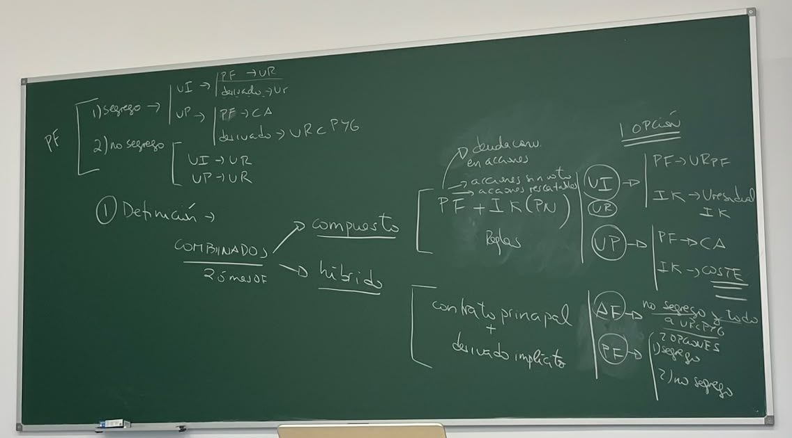

Cómo se clasifica un activo o un pasivo financiero, cómo se mide al entrar y después, y qué parte del cambio de valor llega a la cuenta de pérdidas y ganancias (PyG) o al otro resultado global (ORG). Teoría por apartados (clasificación, reclasificación, pasivos, instrumentos combinados, baja de activos, coberturas y deterioro), un clasificador interactivo, un test con explicación y los exámenes resueltos con sus asientos.
Tres decisiones, siempre en este orden:
El principal es el valor razonable al reconocimiento inicial. Los intereses compensan el valor temporal del dinero, el riesgo de crédito, el de liquidez, los costes de estructura y el margen de beneficio. Los contratos que producen solo eso son, básicamente, la renta fija y los préstamos. Un préstamo en el que pagas 1.000 y recibes cupones de 50 hasta el vencimiento, donde te devuelven 1.050, lo pasa. Uno que paga un porcentaje del EBITDA de la compañía no: la remuneración depende de otra variable.
El test SPPI se pasa una sola vez, en el reconocimiento inicial.
Responde a las preguntas y la guía te dice la cartera. Sirve para practicar el orden de las tres decisiones.
| Coste amortizado | VR con cambios en PyG | VR con cambios en ORG | |
|---|---|---|---|
| Reconocimiento inicial | VR con costes de transacción | VR sin costes de transacción | VR con costes de transacción |
| Valoración posterior | Coste amortizado | VR, cambios al PyG | VR, cambios al ORG |
| Venta de la inversión | Resultado del ejercicio | No se reconoce resultado adicional | Resultado del ejercicio (se recicla el ORG) |
| Deterioro | Pérdida esperada | No procede | Pérdida esperada |
| Criterio general | Opción de ORG | |
|---|---|---|
| Reconocimiento inicial | VR sin costes de transacción | VR con costes de transacción |
| Valoración posterior | VR, cambios al PyG | VR, cambios al ORG |
| Venta de la inversión | No se reconoce resultado adicional | No se reconoce resultado (el ORG no se recicla) |
| Deterioro | No procede | No procede |
Las acciones suelen ir a VR con cambios en PyG o, por opción, en ORG. Si se mantienen para negociar, VR con cambios en PyG es obligatorio.
El coste amortizado devenga intereses con el tipo de interés efectivo (TIE): la tasa que iguala el valor inicial con el valor actual de los flujos futuros. En cada fecha es el valor anterior más los intereses devengados menos los cobros.
Los exámenes lo piden como una ficha contable de la cartera, con columnas de TIR, fecha, valor, principal, intereses devengados no vencidos, diferencia entre coste amortizado y valor razonable, intereses, resultado de operaciones financieras (ROF) y patrimonio neto (PN).
Una cartera de deuda solo cambia de categoría cuando cambia el modelo de negocio: compramos los bonos con una intención y ahora la intención es otra. Los instrumentos de patrimonio no se reclasifican.
| De ↓ / A → | Coste amortizado | VR con cambios en ORG | VR con cambios en PyG |
|---|---|---|---|
| Coste amortizado | — | La diferencia VR−CA va a ORG. No cambia el CA ni el TIE | Como una venta: la diferencia va a PyG y cambia el TIE |
| VR con cambios en ORG | Se cancela el ORG acumulado contra el activo. No cambia el TIE | — | Como una venta: el ORG acumulado pasa a PyG |
| VR con cambios en PyG | Como una compra: el último VR es el nuevo coste y se calcula un TIE nuevo | Como una compra: el VR de ese día es la base y se calcula un TIE nuevo | — |
Regla para recordar: entre coste amortizado y ORG no se altera el coste amortizado ni el TIE; todo lo que entra o sale de VR con cambios en PyG se contabiliza como una venta y una compra, con un TIE nuevo a partir de ese momento.
Bonos de 10.000.000 € de nominal comprados el 1.7.15 al 99 % para mantenerlos hasta el vencimiento (cupón del 1,5 % el 30.6, vencimiento a tres años). TIE de compra: 1,8457 %. A 31.12.16 el mercado descuenta al 1,15 % y cambia el modelo de negocio. Coste amortizado: 10.023.971,30 €; valor razonable: 10.126.540,91 €; diferencia: 102.569,62 €.
Bonos de 1.000 € de nominal registrados por 1.010 € a VR con cambios en PyG el 1.1.X1, con cupón del 5 % el 31.12 y reembolso de 1.012 € el 31.12.X2. Se reclasifican a coste amortizado: es una compra a 1.010 €, con un TIE nuevo que iguala 1.010 a los flujos pendientes (50 y 1.062): 5,0471 %.
Si el valor de registro (1.010) es menor que el coste amortizado que tendría con el tipo antiguo, es que los tipos han subido y el precio ha caído: a partir de ahora se devenga un tipo más alto. Si es mayor, los tipos han bajado.
Bono comprado en enero de X1 por 10.300 € (costes incluidos), reembolso de 12.000 € a dos años, a coste amortizado: TIE = (12.000 / 10.300)^½ − 1 = 7,9374 %. Al año siguiente se reclasifica a VR con cambios en ORG con un valor razonable de 10.800 €. Coste amortizado a esa fecha: 10.300 × 1,079374 = 11.117,55 €. La diferencia (−317,55 €) aflora en patrimonio, en este caso como minusvalía; el TIE sigue siendo el mismo porque el coste amortizado no cambia.
Un pasivo financiero es una obligación contractual de entregar efectivo u otro activo financiero, o de intercambiar instrumentos en condiciones potencialmente desfavorables. Ejemplos: deudas comerciales, emisión de bonos o pagarés y derivados con evolución desfavorable.
Una entidad toma prestados 100.000 títulos de Endesa por un año, paga 1 € de alquiler por título y los vende a 22 €. Pasa a deber títulos, no dinero: el préstamo de valores es un pasivo a VR con cambios en PyG y el alquiler es un gasto financiero.
Un instrumento combinado reúne en un solo contrato dos o más componentes con reglas de valoración distintas. Hay dos familias. El mismo contrato es compuesto para quien lo emite y híbrido para quien lo compra: un bono convertible es, para el emisor, un pasivo más un instrumento de patrimonio; para el inversor, un activo de deuda con un derivado implícito.

PF + IK (PN): pasivo financiero más instrumento de capital. Casos: deuda convertible en acciones, acciones sin voto, acciones rescatables.
| Reglas | PF | IK |
|---|---|---|
| VI (valoración inicial) | VR del PF | Valor residual |
| VP (valoración posterior) | CA | Coste (no se revalúa) |
Contrato principal + derivado implícito.
| PF | VI | VP |
|---|---|---|
| 1) Segrego | PF a VR · derivado a VR | PF a CA · derivado a VR con cambios en PyG |
| 2) No segrego | Todo a VR | Todo a VR |
Abreviaturas: PF, pasivo financiero; AF, activo financiero; IK, instrumento de capital; PN, patrimonio neto; VR, valor razonable; CA, coste amortizado; VI y VP, valoración inicial y posterior. La palabra bajo «Combinados» se lee con dificultad en la foto; por el contexto es «2 o más».
En los compuestos la separación es obligatoria: hay que dar un valor al pasivo financiero y otro al instrumento de capital. En la valoración inicial, el pasivo va a su valor razonable y el instrumento de capital recibe el valor residual; en la posterior, el pasivo va a coste amortizado y el instrumento de capital se queda a coste. Por eso lo primero es siempre calcular el valor del pasivo en la emisión: es lo que fija el instrumento de capital (clase del 27/11, con el examen del 20.6.2019).
La norma vigente (NIC 32, Circular 4/2017 norma 19, PCEA NRV 8ª) exige valorar primero el pasivo: los flujos del bono descontados al tipo de un bono igual pero sin opción. El patrimonio recibe lo que sobra del importe cobrado. El reparto proporcional de valores razonables ya no se admite. Ninguno de los dos genera resultado al emitir.
Ejemplo de teoría: bono convertible de 500.000 € a la par, cupón del 2 %, dos años; un bono sin opción rentaría el 5 %. Pasivo = 10.000/1,05 + 510.000/1,05² = 472.108,84 €; patrimonio = 500.000 − 472.108,84 = 27.891,16 €. Convertible en 25.000 acciones de 10 €.
| Caso | Cómo se trata |
|---|---|
| Separación definitiva | Se hace al emitir y no se revisa después (salvo error), aunque cambien los tipos. |
| Costes de emisión | Se reparten en la misma proporción que el importe: la parte del pasivo entra en el TIE (sube el tipo) y la del patrimonio va contra PN, nunca por PyG. |
| Cancelación anticipada | El precio pagado se reparte: al pasivo, su VR de ese día (la diferencia con el CA va a PyG); el resto, contra patrimonio. |
| Remuneraciones | Los intereses del pasivo van a PyG; lo que retribuye al patrimonio (por ejemplo, un dividendo), contra reservas. |
Cancelación anticipada del ejemplo: al final del año 1 se recompran los bonos por 520.000 €, con el mercado al 4 % para un bono sin opción a un año. CA del pasivo: 485.714,29 €; VR del pasivo: 510.000 / 1,04 = 490.384,62 €.
| Rescate | Dividendo | Qué es |
|---|---|---|
| A opción del emisor | Discrecional | Patrimonio neto: nada le obliga a pagar |
| A opción del tenedor | Discrecional | Compuesto: el rescate es pasivo y el dividendo, patrimonio |
| A opción del tenedor | Obligatorio | Todo pasivo: es un préstamo con forma de acción |
Lo primero es mirar qué es el contrato principal. Si es un activo financiero, no se segrega y todo va a VR con cambios en PyG, porque no pasa el SPPI. Si es un pasivo financiero, hay dos opciones. Si segrego, en la valoración inicial el pasivo y el derivado van a valor razonable; en la posterior, el pasivo a coste amortizado y el derivado a VR con cambios en PyG. Si no segrego, todo a valor razonable, al inicio y después. ¿Qué gana la sociedad segregando? Se ahorra que las oscilaciones de mercado del bono lleguen a resultados: solo se mueve el derivado (clase del 27/11, con el examen superextraordinario).
No segregar siempre es posible: todo el híbrido se lleva a VR con cambios en PyG. Para segregar (derivado a VR con cambios en PyG y principal según su norma) se tienen que cumplir las cuatro condiciones; si falla una, no se separa. Me paro en la primera respuesta que lleva a «no segrego».
Ejemplo: un banco capta 10.000 € a un año y devuelve los 10.000 € más el 50 % de la subida del Euro Stoxx 50, sin interés fijo; un depósito normal paga el 3 %. El índice sube un 10 %. Principal = 10.000 / 1,03 = 9.708,74 €; derivado = 291,26 € (lo que el cliente renuncia a cobrar a cambio de la opción).
El resultado total es el mismo (500 €); cambia cómo se presenta: 291,26 € de gasto financiero más 208,74 € de ROF si segrego, frente a 500 € de ROF si no segrego.
| Caso | Cómo se trata |
|---|---|
| El principal es un activo financiero | NIIF 9 y Circular 4/2017: no se segrega nunca; el instrumento entero se clasifica según sus flujos (un bono ligado al IBEX no pasa el SPPI: todo a VR con cambios en PyG). PCEA: mismo esquema que los pasivos. |
| No hay forma de valorarlo | Si no se puede valorar ni el derivado ni el principal: todo a VR con cambios en PyG. |
| Se decide al contratar | La evaluación no se repite cada año, salvo que se modifique el contrato y cambien mucho los flujos. |
| Pasivo sin segregar | En NIIF 9, la parte de la variación de VR debida al riesgo de crédito propio va a ORG, no a PyG. |
Tres formas de obtener liquidez con activos financieros: la cesión temporal (venta con pacto de recompra), el descuento (anticipo de cobros, con o sin recurso) y la titulización (venta de una cartera a un fondo). En todas la pregunta es la misma: ¿siguen afectando a la entidad los riesgos y beneficios del activo?
Se cede un activo de 100 con compromiso de recomprarlo por 105 a un año. No se transfieren los riesgos: es un préstamo garantizado con el propio activo, que sigue en balance y sigue generando sus rendimientos y su deterioro.
La entidad vende una cartera (970) a un fondo, que emite un tramo senior (873) y un tramo equity de primeras pérdidas (97). Si la entidad garantiza la emisión o compra el tramo equity, retiene sustancialmente los riesgos: la cartera sigue en su balance y reconoce un pasivo por lo colocado a terceros, que coincide con la liquidez obtenida (970 si garantiza, 873 si se queda el equity).
Pérdida esperada, clasificación por fases, cálculo de la cobertura y registro contable. Basado en las diapositivas de Deterioro de activos financieros (Instrumentos Financieros, UAH). Poca teoría y mucho asiento: cada idea va con un ejemplo con cifras.
Un activo financiero de deuda vale lo que se espera cobrar de él. Si el deudor empeora, una parte de lo que dice el contrato ya no se va a cobrar, y esa parte es el deterioro. Formalmente, es la diferencia entre el valor actual de los flujos del contrato y el valor actual de los flujos que se espera cobrar (garantías incluidas), los dos descontados al tipo de interés efectivo original. Nunca se usa un tipo de mercado: el deterioro mide riesgo de crédito, no movimientos de tipos.
Es la tercera pieza del bloque de NIIF 9 que se anunció en la clase del 6/11: clasificación, coberturas contables y deterioro.
El cambio importante de la NIIF 9 es cuándo se reconoce. Con la NIC 39 se esperaba a que hubiera evidencia de la pérdida (pérdida incurrida). Ahora se cubre la pérdida esperada desde el primer día, aunque el cliente esté al corriente: todo préstamo tiene alguna probabilidad de impago.
| NIIF 9 | Circular 4/2017 (BdE) | PCEA | |
|---|---|---|---|
| A quién se aplica | Grupos cotizados (consolidado) | Entidades de crédito | Entidades aseguradoras |
| Modelo | Pérdida esperada | Pérdida esperada | Pérdida incurrida (NIC 39) |
| Fases | Stage 1, 2 y 3 | Normal, vigilancia especial, dudoso y fallido | No hay: se deteriora con evidencia objetiva |
| Cómo se calcula | Modelos propios: PD × LGD × EAD | Metodología interna o solución alternativa (tablas) | Flujos estimados descontados al TIE |
| Garantías | Dentro de la LGD | Valor de referencia con los descuentos del Anejo IX | En los flujos estimados |
La Circular aplica la NIIF 9 y la concreta: añade criterios detallados para clasificar las operaciones y unas tablas que cualquier entidad puede usar si no tiene modelos propios. Es lo que se pide en los exámenes.
| Cartera | Deterioro |
|---|---|
| Coste amortizado (préstamos, anticipos, bonos) | En una cuenta correctora del activo. La dotación y la reversión van a PyG. |
| VR con cambios en ORG (bonos de «cobrar y vender») | La pérdida va a PyG, pero la contrapartida es ORG: el activo sigue a su valor razonable. |
| VR con cambios en PyG e instrumentos de patrimonio | No se deterioran: su valor razonable ya recoge el riesgo de crédito. |
Préstamo de 50.000 € a diez años, TIE del 2,5 %, cuota anual de 5.712,94 €. Al conceder se dota una pérdida esperada del 1 % (500 €). Al final del año 1, ya cobrada la primera cuota, se estima que el cliente solo podrá pagar 3.000 € al año.
| Flujos | Valor actual al 2,5 % | |
|---|---|---|
| Lo que dice el contrato (9 cuotas pendientes) | 9 × 5.712,94 | 45.537,06 |
| Lo que espero cobrar | 9 × 3.000,00 | 23.912,60 |
| Deterioro | 21.624,47 |
Los intereses del año 2 dependen de la fase: en vigilancia especial se calculan sobre el importe bruto (2,5 % × 45.537,06 = 1.138,43 €); en dudoso, sobre el neto (2,5 % × 23.912,60 = 597,81 €).
Probabilidad de que el cliente llegue a 90 días de impago. Siempre existe, cambia con el tiempo y crece con el plazo.
Lo que el cliente debe cuando incumple. En tarjetas y cuentas de crédito depende de cuánto use del disponible.
Lo que se pierde de verdad tras recobrar: depende de las garantías y del coste del recobro.
Ejemplo: tarjeta con 1.000 € de deuda y 90 días de impago (PD = 100 %). Del histórico de tarjetas impagadas se recupera de media un 55 %, así que la severidad es del 45 %: PE = 1.000 × 100 % × 45 % = 450 €.
La fase decide dos cosas: cuánta pérdida se cubre (12 meses o toda la vida de la operación) y sobre qué base se calculan los intereses (importe bruto o neto de la cobertura).
| Stage 1 | Stage 2 | Stage 3 | Fallido | |
|---|---|---|---|---|
| Nombre en la Circular | Riesgo normal | Normal en vigilancia especial | Dudoso | Fallido |
| Situación | Sin aumento significativo del riesgo | Aumento significativo del riesgo | Incumplimiento | Sin expectativa razonable de cobro |
| Señal típica | Al corriente de pago | Más de 30 días de impago | Más de 90 días de impago | Recuperación remota |
| Pérdida que se cubre | 12 meses | Toda la vida | Toda la vida (PD = 100 %) | Todo el saldo |
| Intereses (TIE sobre…) | Importe bruto | Importe bruto | Importe neto de cobertura | — |
| En balance | Sí | Sí | Sí | Baja del activo |
El salto que más pesa en la cuenta de resultados es el de stage 1 a stage 2: la cobertura deja de mirar 12 meses y pasa a mirar toda la vida de la operación, aunque el cliente siga pagando.
Las operaciones vuelven a una fase mejor cuando desaparecen las causas (por ejemplo, el cliente paga lo vencido); las refinanciadas pasan antes por un periodo de prueba.
Stage 1: PE = PD a 12 meses × LGD × EAD. Stages 2 y 3: la suma de PDt × LGDt × EADt / (1 + TIE)t durante toda la vida. La entidad estima sus parámetros con información histórica y prospectiva. Ejercicios 5 y 6.
Cobertura = importe sujeto a cobertura × % de la tabla. El porcentaje ya es PD × LGD multiplicados, según el tipo de cliente, de operación y la fase o los meses de impago. Tablas vigentes: Circular 6/2021, desde el 30.6.2022. Ejemplos A a D y ejercicios 1 a 4.
Las garantías solo reducen la cobertura si son eficaces: la entidad demuestra que de verdad mitigan el riesgo y las valora como exige el Anejo IX.
Alguien distinto del deudor responde con su patrimonio: avales, fianzas, seguros de crédito o caución.
Un bien responde de la deuda. Se resta su valor de referencia × (1 − descuento), que es lo que se espera recuperar de verdad al ejecutarla.
Nunca son eficaces las garantías que dependen de la solvencia del propio deudor: prendas sobre acciones del titular o de su grupo, naves no polivalentes que solo valen si el negocio sigue, o avales cruzados.
| Garantía | Descuento |
|---|---|
| Viviendas terminadas | 30 % |
| Oficinas, locales comerciales y naves polivalentes | 40 % |
| Resto de edificios terminados | 45 % |
| Suelo urbano y urbanizable ordenado | 40 % |
| Resto de bienes inmuebles | 45 % |
| Depósitos dinerarios | 0 % |
| Instrumentos financieros con mercado activo | 10 % |
| Instrumentos financieros sin mercado activo | 20 % |
| Segundas y sucesivas hipotecas, bienes muebles | 50 % |
| Paso | Qué es | Importe |
|---|---|---|
| Importe bruto | Lo que debe el cliente (coste amortizado bruto) | 10.000 |
| − Garantía personal | Parte avalada por un garante sin riesgo apreciable: al 0 % | −8.000 |
| − Garantía real ajustada | Valor de referencia × (1 − descuento) | 0 |
| = Importe sujeto a cobertura | La base sobre la que se aplica el porcentaje (si sale negativa, es 0) | 2.000 |
| × % de la tabla | Pymes, de 90 días a 6 meses | 65 % |
| = Cobertura | 1.300 |
| Segmento | Stage 1 | Stage 2 | 3-6 m | 6-9 m | 9-12 m | 12-15 m | 15-18 m | 18-21 m | > 21 m |
|---|---|---|---|---|---|---|---|---|---|
| Promoción y construcción inmobiliaria | 1,9 | 30,0 | 70 | 75 | 85 | 90 | 95 | 100 | 100 |
| Construcción de obra civil | 2,0 | 18,8 | 55 | 65 | 70 | 80 | 95 | 100 | 100 |
| Financiación especializada | 0,6 | 9,6 | 55 | 65 | 75 | 90 | 95 | 100 | 100 |
| Grandes empresas | 0,6 | 9,6 | 55 | 65 | 75 | 90 | 95 | 100 | 100 |
| Pymes | 1,1 | 17,8 | 65 | 70 | 75 | 85 | 90 | 95 | 100 |
| Empresarios individuales | 1,4 | 13,9 | 35 | 45 | 60 | 65 | 80 | 95 | 100 |
| Consumo y otros fines | 1,8 | 20,2 | 55 | 65 | 80 | 85 | 95 | 100 | 100 |
| Tarjetas de crédito | 1,0 | 11,6 | 55 | 65 | 80 | 85 | 95 | 100 | 100 |
| Hipotecas de familias | 0,7 | 18,0 | 45 | 50 | 65 | 70 | 85 | 95 | 100 |
Lectura de la tabla: stage 1 ≈ PD a 12 meses × LGD; stage 2 ≈ PD de toda la vida × LGD; stage 3 ≈ 1 × LGD, que crece con la antigüedad del impago hasta el 100 % a partir de los 21 meses. Las administraciones públicas y las sociedades financieras con riesgo usan los porcentajes de grandes empresas. En hipotecas de vivienda habitual la tabla distingue préstamos por encima o por debajo del 80 % de la garantía, pero los porcentajes son iguales.
Elige el segmento y la situación, mete el importe y las garantías, y la calculadora hace el paso a paso del Banco de España.
La cobertura es un saldo acumulado: en cada cierre se calcula la que hace falta y solo se registra la diferencia con la que ya había. Si sobra, se revierte a resultados.
Préstamo al consumo de 10.000 € sin garantías.
| Momento | Fase | % tabla | Cobertura acumulada | Dotación del periodo |
|---|---|---|---|---|
| Concesión | Stage 1 | 1,8 % | 180 | 180 |
| 45 días de impago | Stage 2 | 20,2 % | 2.020 | 1.840 |
| 4 meses de impago | Stage 3 | 55 % | 5.500 | 3.480 |
Si el cliente vuelve a pagar y mejora de fase, la cobertura sobrante se revierte: Correcciones de valor a Reversión de pérdidas (PyG).
Mismo préstamo con un TIE del 6 % y 5.500 € de cobertura. En stages 1 y 2 el ingreso es 6 % × 10.000 = 600 €. En stage 3 es 6 % × (10.000 − 5.500) = 270 €: así no se reconocen como ingreso intereses que probablemente no se cobrarán.
Bono de 10.000 € en la cartera de «cobrar y vender» con una pérdida esperada a 12 meses de 100 €. La cuenta de resultados recoge la misma pérdida en los dos casos; lo que cambia es la contrapartida.
| Caso | Cómo se trata | Ejemplo |
|---|---|---|
| Garantes sin riesgo apreciable | La parte avalada por el Estado, el ICO o CESCE va al 0 %. Si el garante es otro, se aplica su propio porcentaje. | Préstamo de 10.000 con aval del ICO del 80 %: solo se cubren 2.000. |
| Fallido parcial | Se puede dar de baja solo la parte irrecuperable y mantener el resto en balance. | De 10.000 se da por perdida una quita de 3.000 y siguen 7.000. |
| Estimación individualizada | Los dudosos significativos se estiman operación a operación, no con tablas. | Referencias habituales: 3 millones o el 5 % de los recursos propios. |
| Activos adjudicados | Si la entidad se queda el inmueble, aplica otros descuentos (punto 172): viviendas 25 %, oficinas y locales 30 %, resto de edificios 32 %, suelo 35 %, resto 40 %. | Vivienda tasada en 120.000 → 90.000. |
Hipoteca de 200.000 € con una garantía que, ya ajustada, vale 100.000 €: el importe sujeto a cobertura es 100.000 €.
| Situación | % | Cobertura |
|---|---|---|
| Stage 1: al corriente | 0,7 % | 700 |
| Stage 2: 30 días de impago | 18 % | 18.000 |
| Stage 3: 90 días de impago | 45 % | 45.000 |
Que una cuota de 1.000 € llegue a 30 días cuesta 17.300 € de cobertura; que llegue a 90 días, 27.000 € más. Cobrar las cuotas atrasadas y volver a stage 1 libera 44.300 €: por eso el recobro temprano es tan importante.
| A · Pyme con aval del ICO | B · Tarjeta de un particular | C · Hipoteca de vivienda | D · Gran empresa con prenda | |
|---|---|---|---|---|
| Datos | 10.000 €, aval ICO 80 %, 120 días | 1.000 €, 7 meses | 80.000 €, tasación 100.000 €, 13 meses | 100.000 €, prenda de deuda pública de 50.000 €, 7 meses |
| − Garante | −8.000 (0 %) | 0 | 0 | 0 |
| − Garantía real | 0 | 0 | 100.000 × 70 % = −70.000 | 50.000 × 90 % = −45.000 |
| = Sujeto a cobertura | 2.000 | 1.000 | 10.000 | 55.000 |
| × % | Pymes, 3-6 m: 65 % | Tarjetas, 6-9 m: 65 % | Vivienda ≤ 80 %, 12-15 m: 70 % | Grandes empresas, 6-9 m: 65 % |
| = Cobertura | 1.300 | 650 | 7.000 | 35.750 |
Los asientos son todos iguales: Pérdidas por deterioro (PyG) a Correcciones de valor por la cobertura, suponiendo que la operación partía de cero. En C el préstamo es el 80 % de la tasación: va a la fila de vivienda habitual con importe ≤ 80 % de la garantía. En D la deuda pública tiene mercado activo: descuento del 10 %.
1. Préstamo al consumo de 1.000 € avalado por el Estado. Todo está avalado por un garante sin riesgo apreciable: va al 0 %. Cobertura: 0 €.
2. Hipoteca de 100.000 € con tasación de 200.000 €. Garantía ajustada: 200.000 × 70 % = 140.000, mayor que la deuda: importe sujeto a cobertura 0. Cobertura: 0 €, aunque pasara a dudoso.
3. Hipoteca de vivienda habitual de 100.000 € con tasación de 120.000 €. Garantía ajustada: 120.000 × 70 % = 84.000; sujeto a cobertura: 16.000 (el préstamo es el 83 % de la tasación, fila > 80 %, mismos porcentajes). Concesión: 16.000 × 0,7 % = 112 €. Con 4 meses de impago: 16.000 × 45 % = 7.200 €. Entre los 30 y los 90 días habría estado en stage 2 (18 % → 2.880 €).
Préstamo de 200.000 € a una pyme con prenda de acciones cotizadas que valen 100.000 €. A 31.12.X está en stage 1 y a 31.12.X+1 pasa a stage 2. Garantía ajustada: 100.000 × 90 % = 90.000 (instrumento con mercado activo); sujeto a cobertura: 110.000.
El paso a stage 2 multiplica por 16 la cobertura aunque el cliente siga pagando. Balance: préstamo 200.000 menos corrección 19.580 = 180.420 € neto.
El 1.1.X1 se concede un crédito al consumo de 200.000 € a 5 años, reembolso único al final e interés del 5 % pagadero cada 31.12. Costes de transacción soportados: 3.000 €; comisión de apertura cobrada: 0,5 % (1.000 €). PD a 12 meses del 1,5 % en la concesión; a 31.12.X1 hay un aumento significativo del riesgo y la PD de toda la vida es del 16 %. LGD del 100 %.
Importe inicial = 200.000 + 3.000 − 1.000 = 202.000 €. TIE: el que iguala 202.000 a cinco cupones de 10.000 y 200.000 al final: 4,77 %.
| Fecha | Importe bruto | Cobertura | Neto en balance |
|---|---|---|---|
| 1.1.X1 | 202.000,00 | 3.030,00 | 198.970,00 |
| 31.12.X1 | 201.636,39 | 32.261,82 | 169.374,57 |
En stage 2 los intereses se siguen calculando sobre el bruto. La pérdida de toda la vida se simplifica como PD de vida × LGD × EAD, sin descontar.
El 1.1.X1 se compra un bono de 10.000 € de nominal, cupón anual del 5 % y vencimiento a 5 años, clasificado a VR con cambios en ORG. Precio 9.800 € más 500 € de costes. PD a 12 meses 1,5 %; de vida 6 %. A 31.12.X1 el riesgo sube ligeramente (no de forma significativa): la PD de vida pasa al 6,5 %, que es un distractor. VR al cierre: 10.100 €. LGD del 100 %.
Importe inicial 10.300 €, TIE 4,32 %. Sigue en stage 1: el aumento no es significativo, así que solo cuenta la PD a 12 meses.
El bono queda a su valor razonable (10.100 €). La cobertura (153,67 €) no reduce el activo: está dentro del ORG. En PyG: intereses 444,96 € y reversión de deterioro 0,83 €.
En los exámenes: 2016 y 2017 (crédito que pasa a dudoso, con la norma anterior), el 24.1.2025 (hipoteca de familias) y el extraordinario del 7.7.2026 (préstamo al consumo), todos en el apartado 12.
Doce preguntas sobre clasificación y medición. Cada respuesta se corrige al momento con su explicación.
Todas las convocatorias de tu carpeta de Contabilidad, ejercicio por ejercicio. Cada uno se puede resolver paso a paso: primero el enunciado, después cada paso con sus cálculos y con los asientos contables que dicen qué se mueve y hacia dónde (activo, pasivo, patrimonio neto o cuenta de resultados).
Cómo leer los asientos. Cada línea lleva una etiqueta: Activo Pasivo ORG / PN PyG. Las cuentas del Debe van a la izquierda y las del Haber, con una «a» delante, a la derecha. Debajo de cada asiento verás el efecto neto en balance, en patrimonio y en resultados.
Terminología. Los exámenes de 2016 a 2019 usan la norma anterior (NIC 39 y PGC): «disponible para la venta» equivale hoy a valor razonable con cambios en ORG, y la cartera con modelo de cobro de flujos, a coste amortizado. ROF es el resultado de operaciones financieras, que va a la cuenta de pérdidas y ganancias.
Fuentes: enunciados, soluciones y hojas de cálculo de las convocatorias de Contabilidad de tu carpeta (Contabilidad2), diapositivas de Instrumentos Financieros y notas de la clase del 6/11/2026. Máster U. en Ciencias Actuariales y Financieras, Universidad de Alcalá.